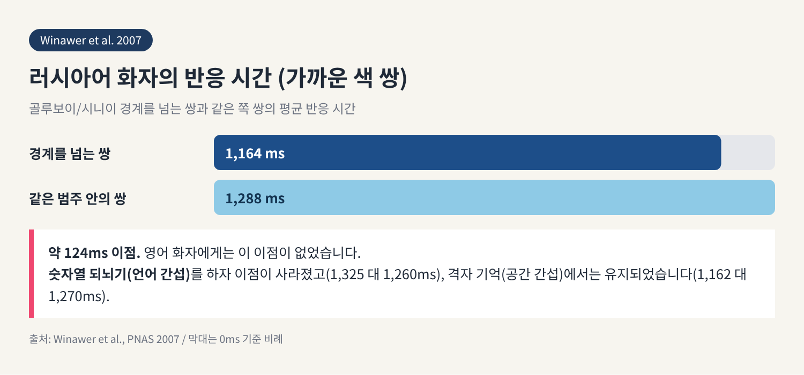
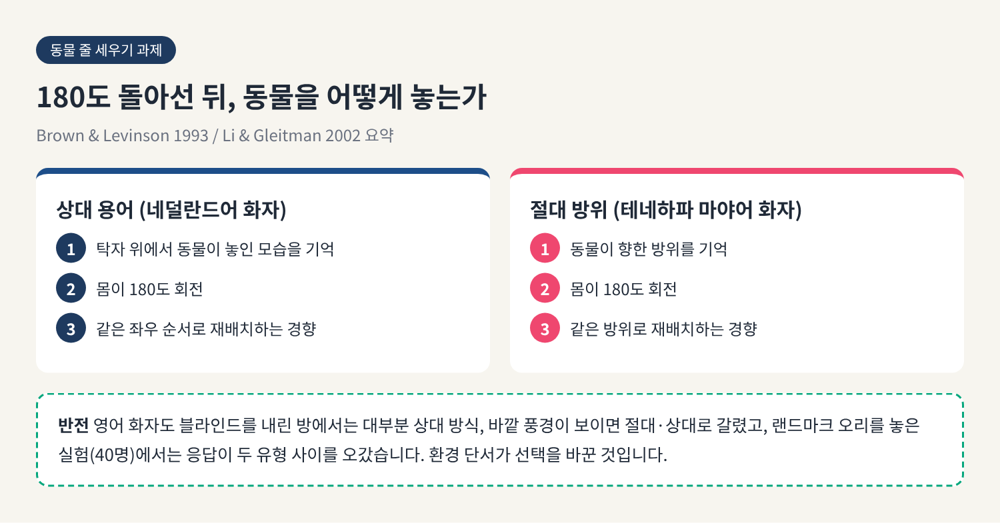
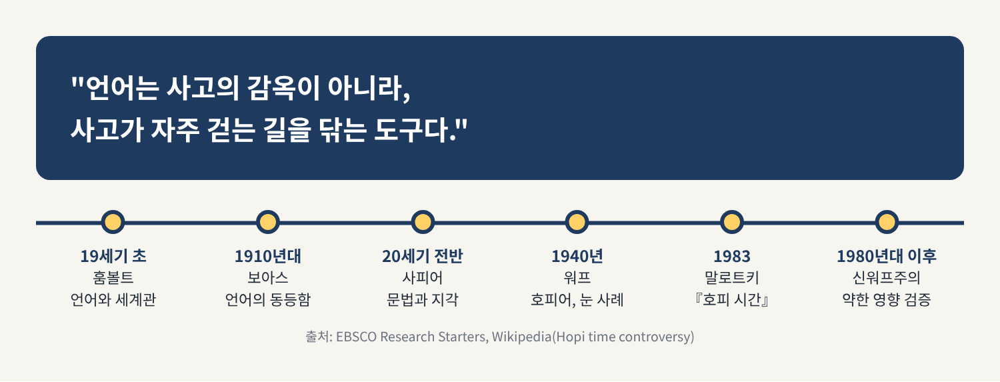

이번 글에서는 사피어-워프 가설, 곧 언어 상대성 가설을 정리해 보겠습니다.
쓰는 언어가 생각을 결정하는지, 아니면 약간 기울이는 정도인지를 색채어·공간 방향어·시간 은유 실험으로 살펴봅니다.
결론부터 말씀드리면, 강한 결정론은 힘을 잃었고 약한 영향론은 조건부로 살아남았습니다.
흔히 사피어와 워프가 함께 세운 가설로 알려져 있습니다.
그러나 두 사람이 협업한 적은 없고, 검증 가능한 가설의 형태로 내놓은 적도 없습니다. 이름은 후대가 붙인 것입니다.
에드워드 사피어는 문법의 차이가 세계를 지각하는 방식의 차이를 드러낸다고 보았습니다. 다만 언어가 사고를 결정한다는 입장에는 반대했습니다.
그의 제자 벤저민 리 워프는 보험회사 임원으로 일하며 언어를 연구한 인물입니다. 그가 이 생각을 대중에게 퍼뜨렸습니다.
훗날 심리학자 로저 브라운이 두 갈래로 정리했습니다.
이 글의 물음은 결국 하나입니다. 어느 쪽이 실험에서 버텼는가.
워프의 가장 유명한 주장은 호피어에 관한 것입니다.
그는 호피어에 우리가 '시간'이라 부르는 것을 직접 가리키는 단어도, 문법 형태도, 표현도 없다고 썼습니다.
1983년 에케하르트 말로트키가 『호피 시간』으로 반박했습니다.
서 제3메사에서 4년간 현지 조사를 하고, 시간을 가리키는 호피어 단어와 구문을 수백 개 제시한 600쪽 분량의 책입니다.
언어학자 버나드 콤리는 워프의 강한 주장에 "치명적"이라고 평했습니다.
다만 이야기가 여기서 끝나지는 않습니다.
존 루시 같은 학자들은 워프가 '시간'에 따옴표를 붙인 것은 부재가 아니라 다름을 뜻했다고 읽습니다. 2006년 데이비드 디누디는 말로트키가 영어식 시간 개념으로 호피어를 번역한 것이 아니냐고 되물었습니다.
"호피어에는 시간 개념이 없다"는 속설은 틀렸지만, 워프가 말하려던 바를 어디까지 받아들일지는 여전히 논쟁 중입니다.
약한 버전의 가장 강력한 근거는 색 연구입니다.
러시아어는 밝은 파랑 '골루보이'와 짙은 파랑 '시니이'를 별개의 기본 색 이름으로 구분합니다. 영어에는 두 색을 가르는 기본어가 없습니다.
2007년 위나워 연구진이 보스턴에서 러시아어 화자와 영어 화자를 비교했습니다.
파랑 사각형 세 개를 보여 주고 아래 두 개 중 위와 같은 색을 고르게 하는 과제입니다. 연속체의 색들이 골루보이와 시니이 경계를 넘을 때와 넘지 않을 때를 견주었습니다.
러시아어 화자는 경계를 넘는 쌍에서 약 124밀리초 빨랐습니다(1,164 대 1,288ms).
영어 화자에게는 그런 이점이 없었습니다.
흥미로운 대목은 간섭 실험입니다.
숫자열을 되뇌어 머릿속 언어를 바쁘게 만들자 이점이 사라졌습니다. 반면 격자 무늬를 기억하는 공간 과제는 효과를 건드리지 못했습니다.
언어 범주가 색을 볼 때 실시간으로 개입한다는 해석이 가능한 이유입니다.
2006년 길버트 연구진의 결과는 더 기묘합니다.
색 범주 효과가 오른쪽 시야에서만 나타났습니다. 언어를 담당하는 좌반구가 오른쪽 시야 정보를 받기 때문으로 풀이됩니다. 뇌량을 절단한 환자에게서도 같은 경향이 보였습니다.

그러나 한계를 함께 적어야 합니다.
길버트 연구는 분석 대상이 11명이었고, 차이는 대체로 8~30밀리초에 그쳤습니다. 변화가 지각 단계에서 일어나는지 판단 단계에서 일어나는지도 구분하지 못했습니다.
효과는 실재하되 작고, 조건이 까다롭다는 것이 정직한 요약입니다.
2016년 시벨리 연구진은 이 현상을 확률적 추론으로 설명했습니다. 지각 정보가 불확실할수록 기억은 언어 범주의 대표값 쪽으로 끌려간다는 모형입니다. 언어는 보편적 지각 위에 한 겹을 얹을 뿐이라는 뜻입니다.
호주 북동부의 구구 이미티르어와 포름푸라우의 쿠욱 타요레어는 '왼쪽·오른쪽' 대신 동서남북으로 공간을 말합니다.
방향을 말할 때 동서남북이 일상의 어휘가 되는 셈입니다. 쿠욱 타요레어는 방향어가 열여섯 개에 이르고, 화자는 늘 자신이 어느 쪽을 향하는지 압니다.
하빌랜드는 구구 이미티르 화자가 말할 때 방위를 놓치지 않으며, 손짓 방향도 실제 지리와 매우 잘 맞는다고 보고했습니다. 레빈슨은 이들이 비언어적 기억도 방위로 저장하는 경향을 보였다고 썼습니다.
네덜란드어와 마야계 테네하파어를 비교한 '동물 줄 세우기' 과제도 유명합니다.
180도 돌아선 뒤 동물을 다시 놓게 하면, 절대 방위를 쓰는 테네하파 화자는 같은 방위로, 상대 용어를 쓰는 네덜란드어 화자는 같은 좌우로 놓는 경향이 강했습니다.
반론은 2002년 리와 글라이트먼에게서 나왔습니다.
영어 화자도 실내에서 블라인드를 내리면 거의 상대 방식으로, 바깥 풍경이 보이면 절대·상대로 갈렸습니다. 랜드마크를 놓은 실험(40명)에서는 응답이 네덜란드형과 테네하파형으로 옮겨 갔습니다.
같은 언어 화자도 단서에 따라 달라진다면, 원인은 언어보다 환경일 수 있습니다.

쿠욱 타요레 화자에게 시간 순서의 그림 카드를 배열하게 한 보로디츠키와 게이비(2010)의 연구가 있습니다.
화자들은 자신의 몸이 어디를 향하든 시간을 동쪽에서 서쪽으로 늘어놓았습니다. 남쪽을 보면 왼쪽에서 오른쪽, 북쪽을 보면 오른쪽에서 왼쪽이 되는 식입니다.
영어 화자는 거의 모두 왼쪽에서 오른쪽으로 배열하고, 히브리어 화자는 반대로 늘어놓습니다. 문자를 쓰는 방향의 영향이 큽니다.
만다린에는 과거를 위, 미래를 아래로 보는 수직 시간 은유가 있습니다. 다만 쓰기 방향에 노출된 정도에 따라 달라질 수 있다는 연구도 있습니다.
그렇다고 공간어가 시간 사고를 일관되게 결정한다고 말하기는 어렵습니다.
2012년 벤더 연구진은 독일 137명, 미국 137명, 중국 70명, 퉁가 116명을 조사했습니다. 공간 기준틀의 선호와 시간 기준틀의 선호 사이에서 일관된 관계를 거의 찾지 못했습니다.
정적 과제에서 앞쪽을 '더 먼 쪽'으로 본 비율이 중국은 공간 43.7%, 시간 3.7%였습니다. 미국 참가자 108명에게서는 같은 문구의 공간적 해석과 시간적 해석이 거의 무관했습니다(r=-0.037).
쿠욱 타요레에서는 맞았던 연결이 첼탈어, 유카텍 마야어 등에서는 맞지 않았습니다.
문해 능력이라는 교란 요인과 큰 개인차도 남아 있습니다. 시간과 공간의 결합은 언어마다, 과제마다 다릅니다.
피라항어는 숫자어가 없다는 이유로 강한 가설의 시험대가 되었습니다.
2008년 프랭크 연구진은 화자 4명을 시험했습니다. '하나'로 여겨지던 말이 '적음'이나 '더 적음'에 가까운 상대어일 가능성이 컸습니다. 큰 집합을 일대일로 맞히는 일은 잘했지만, 가려진 뒤 맞히는 과제에서는 어려움을 겪었습니다.
숫자어가 정확한 양의 개념을 만들어 주는 것이 아니라, 기억하고 비교하는 일을 거드는 도구에 가깝다는 해석이 나옵니다. 에버렛과 네빈스 등이 논쟁을 이어 가고 있어 단정은 이릅니다.
문법 성이 사물의 인상을 바꾼다는 2003년 연구는 독립 재현에 실패했고, 대규모 단어 분석에서도 무생물 명사의 성과 형용사 사이 상관은 확인되지 않았다는 비판을 받았습니다.
2012년 케이스 첸의 미래시제 연구도 화제가 되었으나 언어학자들의 반박을 받았습니다.
정리하면 이렇습니다.
결국 오늘의 합의에 가까운 문장은 이것입니다.
"언어는 사고의 감옥이 아니라, 사고가 자주 걷는 길을 닦는 도구다."
마지막으로 한 가지만 덧붙이겠습니다.
언어가 생각을 가두지 않는다면, 우리가 새로운 단어를 배울 때 바뀌는 것은 무엇일까요. 러시아어의 두 가지 파랑을 알고 나면 하늘이 조금 달리 보이느냐고 물으신다면, 저는 아주 조금, 그것도 마음먹고 볼 때에 한해 그렇다고 답하겠습니다.
